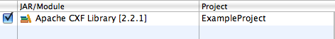

By default projects configured with the CXF facet are setup to resolve the CXF libraries to the WEB-INF/lib folder at deployment time.
This however greatly increases the size of the deployed web module. If the web or application server you are deploying to is already configured with the Apache CXF libraries you can disable this option in the Apache CXF preferences.
To enable or disable this functionality in a existing Dynamic Web Project already configured with the CXF Facet right-click on the project and choose Properties.

Select the Java EE Module Dependencies properties page and select or deselect the version of the Apache CXF Library that is configured in the project and click OK.